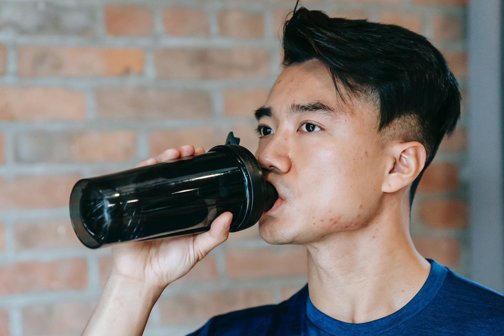
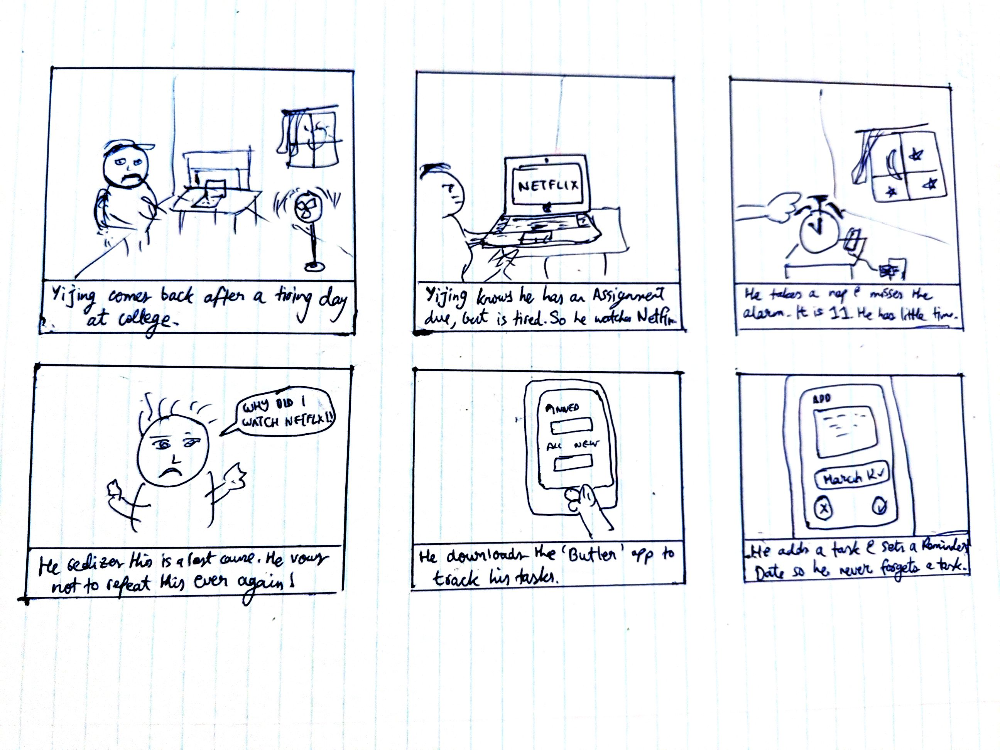

User personas: Identifying who the users are
Yijing Bratislav
Yijing lives in the outskirts of Krakow, Poland. He is 21 and in college, pursuing an undergraduate degree in mechanical engineering.He works part time as a server at a hotel in downtown Krakow. As a college student, he frequently gets into the habit of submitting assignments late. He enjoys going to bars and is currently trying to get in shape.
HABITS
+ Staying active- working out, hiking, bouldering.
+ Tasting craft beer.
+ Takes the scenic route on the drive to work.
Jimmy Singh
Jimmy is 30. He is a consultant, and a recent immigrant to Canada from India. He works at one of the Big Three firms. This keeps him busy for a long part of his day. He likes to read when he comes home, and wants to go to the Barbados when COVID is over. He likes to keep things neater than when he found them.
HABITS
+ Reading philosophy.
+ Cleans his room twice a day.
+ Obsessed with cleanliness and keeping things neat.
Chitambaram Patel
Chitambaram or 'Chi' is 24 and lives with his parents in Bangalore, India. He hopes to start his own company after he acquires some money, and break into the budding tech startup scene in his city. He likes playing e-sports and has won several tournaments. He has family in California, and likes to visit them whenever he can.
HABITS
+ Gaming on his computer.
+ Attends Comic-Con every year.
+ Hates the cold, loves staying warm.
IDEATION: COMING UP WITH A SOLUTION
How might we...
After analyzing my users, I drew up these sets of questions to better frame the solution to my task.
+ How might we focus on improving motivation?
+ How might we appeal to a sense of reward upon completing a task?
+ How might we prevent feature-bloat?
DEFINING PROBLEMS, IDENTIFYING SOLUTIONS
I set out to identify the problems, and think of some potential solutions.
+ PROBLEM : Improving motivation and reducing procrastination.
- SOLUTION : A minimalist reward for checking off a task could help push a user into doing it. Implementing a small 'counter' for tasks finished would address the issue.
+ PROBLEM : The need to keep the app minimal and avoid bloat, while implementing this approach.
- SOLUTION : The implementation of a reward system does not need to be explicit. It can be as simple as a stroke of color in a grey app or a satisying animation. Receiving a differentiating feedback for checking off a task can lead a user to want to check off tasks. The aforementioned idea of a number showing how many tasks have been completed is also good for this purpose.
DESIGN: IMPLEMENTATION AND PROTOTYPING
SKETCHING
The carousel below shows the various sketches. Slide through to see them all!
FINAL DESIGNS
+ What has changed?
An 'Upcoming' tab has been introduced. A delete button has been placed under the left swipe action. Introduction of a 'Mark as Doing' feature for ongoing tasks.
+ Why use swipe actions?
Firstly, users are likely to be familiar with swipe actions from using email apps such as Outlook. This familiarity will help reduce the feeling of foreign-ness upon downloading the new app. Besides this, it will keep the UI minimalist! Secondly, the reason is to introduce an animation and a dash of color upon completion of a task or an attempt to pin it. This action in an otherwise grey app, will help drive motivation to finish a task off, in addition to the finished task counter that is present.
Slide through this carousel to see all the screens!


FINAL THOUGHTS
ABOUT THE FUTURE
This app had little time scheduled for it on the UX side. Therefore, it is only fair I dedicate a section to what might have gone into it in the future.
So what does the future look like?
+ Integration with its sister app, the Indian AirBnb competitor yet to be released.
+ A splash screen for onboarding users.
+ Better explanation of the 'Mark as Doing' feature.